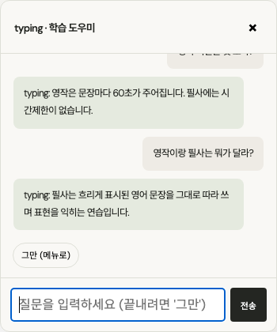
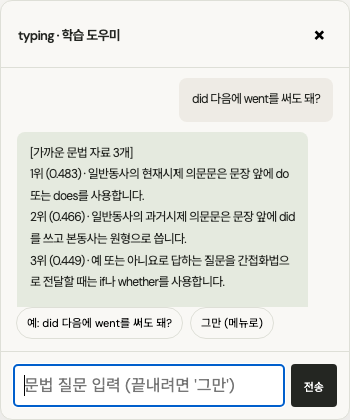

Feature Log
회차별 추가 기능,
단계별 개발 기록.
서비스 개발 과정에서 새로 붙인 에이전트 기능과
실제 동작 결과를 모아둔 페이지입니다.
PBL 02 · Q&A Bot
고친 FAQ로 답하고,
대화를 기록합니다.
오늘 붙인 기능: 영작·필사 질문에 고친 FAQ로 답하고, 대화와 메뉴 사용을 SQLite에 기록합니다.
answer.md→data/faq.txt→bot.py→SQLite

PBL 03 · Semantic Search
내 말로 물으면,
문법 자료를 뜻으로 찾습니다.
오늘 붙인 기능: 내 말로 물으면 영문법 자료에서 뜻이 가까운 셋을 찾아 원문과 점수를 보여 줍니다.
grammar_guide.txt→embed.py→search.py→원문 3개 + 점수

PBL 04 · Private learning data
내 학습 기록을 내 계정에만 저장합니다.
로그인하면 영작 기록과 복습 진도가 기기 간 동기화되고, Supabase RLS가 다른 사용자의 기록 접근을 막습니다.